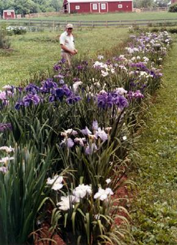

Sans Souci Nursery, LLC
Specializing In Irises

San Souci Nursey was on Beatty Road
Monkton, Maryland 21111
You can still contact Bruce Hornstein by E-Mail:
lbh0251@msn.com

Sans Souci Nursery,
which was located in Monkton, Maryland, grew out of the life long the hobby of
Dr. L. Bruce Hornstein
,
a retired veterinarian. The Nursery is about 25 miles north of the city of Baltimore
in an area known for its fine horses. The Nursery is in growth zone 7 where plants
generally become dormant in the winter. This winter dormancy contributes to their hardiness
and vigor. The relatively mild winters, however, allow us to grow a wide
variety of cultivars. The bloom season begins in April and ends with the
reblooming bearded iris in the second week of November at the time of the
first heavy frost. In fact, the unusually mild weather of 2003 allowed irises
to bloom into the second week of December!
During the bloom season visitors were welcomed to the gardens and it was a favorite spot to visit for people who desired to enjoy
Irises, Dahlias, Peonies and many other lovely plants . The property was also the home a large American Chestnut tree still fighting against the Chestnut blight.
The IRISES have HIM - about L Bruce Hornstein
Colorful flowers are like family to Monkton gardener
Use this link or the picture to the right to learn more about San Souci Nursery's
L. Bruce Hornstein!
|
or check out the American Iris Society's homepage (which also includes
pictures of many varieties of irises):
http://www.irises.org
|
|
|